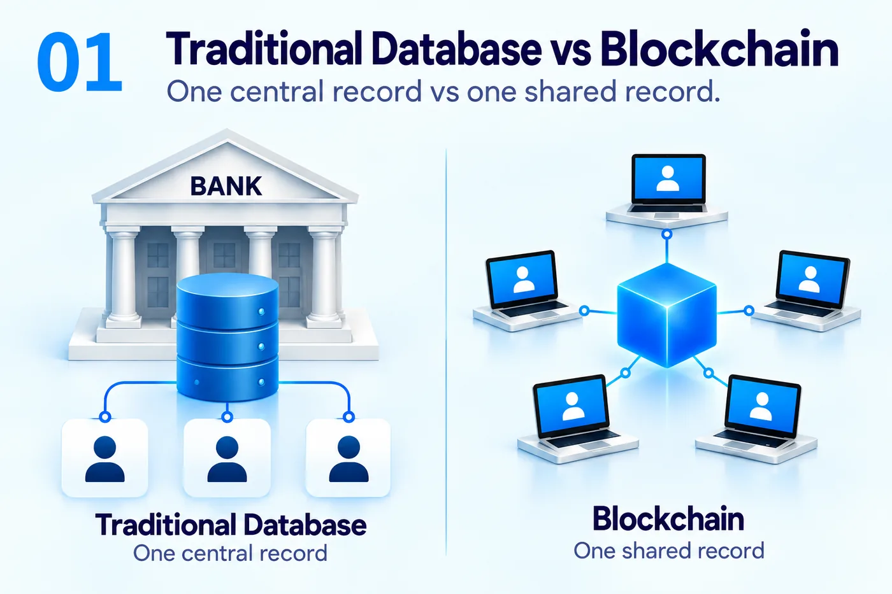

Before Chainlink

Most of the financial world runs on databases controlled by institutions. Your bank keeps a record of your balance. A stock exchange records trades. A fund administrator records who owns units in a fund. This model works, but every record ultimately depends on an organization operating the database correctly.
A blockchain takes a different approach. Instead of one organization keeping the only authoritative copy, a network of computers follows common rules to maintain a shared record. Participants can independently verify what the system says happened. Bitcoin showed that this could be used for digital money. Ethereum extended the idea by allowing programs, called smart contracts, to run on the shared ledger.
A smart contract is simply software with rules. It can say: if these conditions are satisfied, perform this action. That could mean transferring an asset, issuing a loan, exchanging two tokens or updating ownership. The important change is that the rules can execute inside the blockchain environment rather than depending on a person at a company to manually update a database.
This does not make blockchains magically superior to ordinary databases. Centralized databases are often faster, cheaper and easier to govern. The useful difference is that a blockchain can create a common state shared between parties that do not want one participant to have unilateral control over the record.
That ability becomes interesting in finance. If money, securities and contractual rules can exist as programmable records, parts of financial activity can potentially happen continuously and automatically. But the moment we try to connect those programs to the real world, we discover a fundamental limitation.
To understand Chainlink, we first need to understand why blockchains exist.